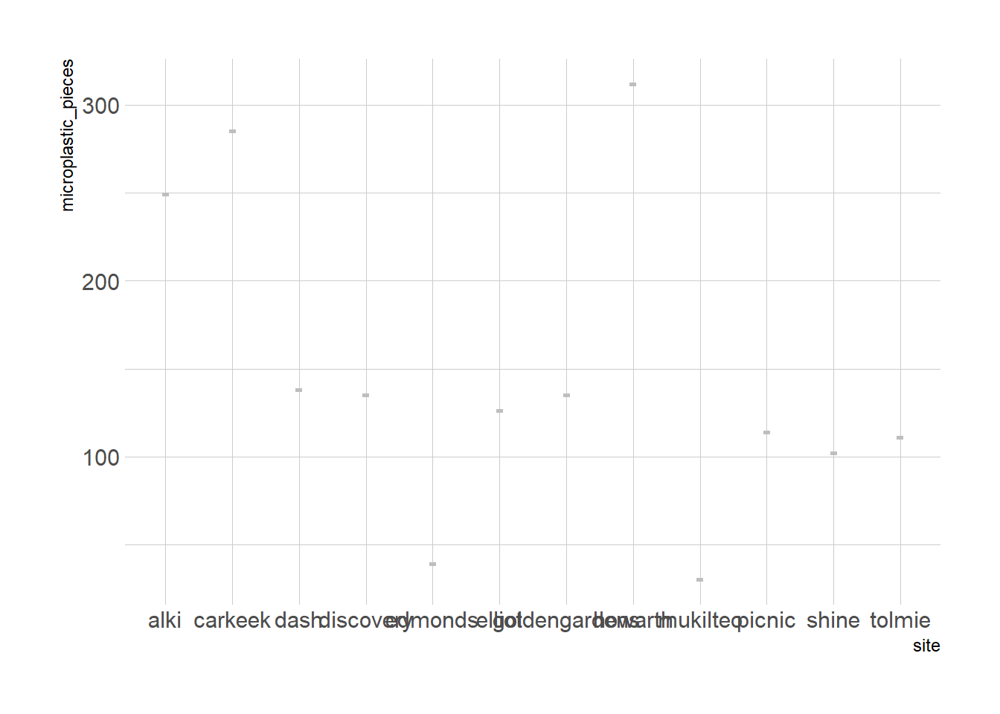

if ('tidyverse' %in% rownames(installed.packages()) == 'FALSE') install.packages('tidyverse')library(tidyverse)“Simply stated, we do not currently know levels of microplastics in the ocean (water, sediments, organisms), the spatial and temporal distribution of microplastics, the sources of these materials (either in absolute or relative terms), or the direct or indirect impacts microplastics may be having on marine life. From a basic understanding of the processes degrading plastic in the environment, it is likely that marine microplastics will persist in the ocean for very long times, and that levels of microplastics are likely accumulating world-wide (Thompson et al., 2004).” - Center for Urban Waters, Sources and Distribution of Marine Microplastics
Who monitors marine microplastics in Puget Sound and the Salish Sea, and what are they finding?
Seattle Aquarium
Seattle Aquarium, Seattle, Washington engages in long-term monitoring of plastics and marine debris collected from their seawater intake pump and off the side of the pier where they are located. They published some of their data taken from 2019-2020 in Harris et al. (2022), where they indicate they found between 0.0 and 0.64 microparticles sized between 330 μm to 5000 μm per liter of seawater sampled.
Only microparticles 330 to 5000 μm (length; Masura et al., 2015) were categorized and measured due to the resolution of the microscope and camera. - Harris et al. (2022), p. 919
Harris, Lyda S. T., Laura La Beur, Amy Y. Olsen, Angela Smith, Lindsey Eggers, Emily Pedersen, Jennifer Van Brocklin, Susanne M. Brander, and Shawn Larson. 2022. “Temporal Variability of Microparticles Under the Seattle Aquarium, Washington State: Documenting the Global Covid-19 Pandemic.” Environmental Toxicology and Chemistry 41 (4): 917–30. https://doi.org/10.1002/etc.5190.
data from years 2019-2020
data from 9m depth at Seattle Aquarium intake pump in downtown Seattle
seawater matrix
size class: 330 μm to 5000 μm
Puget Sound Ecosystem Monitoring Program (PSEMP)
Pollution Tracker
Coast-wide Marine Pollution Monitoring Program in British Columbia, Canada
Elizabeth Ruberg, Marie Noel, Kelsey Delisle (Ocean Wise, https://pollutiontracker.org)
Pollution Tracker, Microplastics
Pollution Tracker Phase 1 (2015-2017) and Phase 2 (2018-2020) provide a high-quality coast wide baseline dataset
During Phases 1 (2015-2017) and 2 (2018-2020), both legacy pollutants and emerging contaminants of concern were measured in sediment and mussels
Microplastics were characterized in sediment and mussels
Phase 1 results have been summarized in Noel et al. 2022 (under review) and will be posted once published. Key results include:
Microplastics averaged 32.6 ± 5.3 particles per kg in sediment and 0.38 ± 0.04 particles per individual mussel
Victoria Harbour and the North Coast were microplastics hotspots along the BC coast
Polyester and polyethylene dominated the polymer patterns in sediment and mussels
Analysis of Phase 2 microplastics samples and interpretation of results is in progress.
Frances Eshom-Arzadon, University of Washington School of Oceanography
Undergrad senior thesis: Concentration of Microplastics in Beach Sediments Surrounding Seattle, Washington in the Puget Sound Estuary
size class: 300 - 5000 um
Eshom-Arzadon found between ~312-30 microplastic pieces per square meter across 12 sites
site <- c('alki', 'carkeek', 'goldengardens', 'howarth', 'mukilteo', 'dash', 'tolmie', 'elliot', 'discovery', 'shine', 'picnic', 'edmonds')
microplastic_pieces <- c(249, 285, 135, 312, 30, 138, 111, 126, 135, 102, 114, 39)
eshomarzadon <- tibble(
site = site,
microplastic_pieces = microplastic_pieces
)
mean(microplastic_pieces)[1] 148sd(microplastic_pieces)[1] 89.05259if ('hrbrthemes' %in% rownames(installed.packages()) == 'FALSE') install.packages('hrbrthemes')
if ('viridis' %in% rownames(installed.packages()) == 'FALSE') install.packages('viridis')
library(ggplot2)
library(dplyr)
library(hrbrthemes)Warning: package 'hrbrthemes' was built under R version 4.2.3NOTE: Either Arial Narrow or Roboto Condensed fonts are required to use these themes. Please use hrbrthemes::import_roboto_condensed() to install Roboto Condensed and if Arial Narrow is not on your system, please see https://bit.ly/arialnarrowlibrary(viridis)Warning: package 'viridis' was built under R version 4.2.3Loading required package: viridisLiteWarning: package 'viridisLite' was built under R version 4.2.3eshomarzadon %>%
ggplot(aes(x=site, y=microplastic_pieces)) +
geom_violin(width=1.4) +
geom_boxplot(width = 0.1, color = 'grey', alpha=0.2) +
scale_fill_viridis(discrete=TRUE) +
theme_ipsum()Warning: Groups with fewer than two data points have been dropped.Warning: Groups with fewer than two data points have been dropped.
Groups with fewer than two data points have been dropped.
Groups with fewer than two data points have been dropped.
Groups with fewer than two data points have been dropped.
Groups with fewer than two data points have been dropped.
Groups with fewer than two data points have been dropped.
Groups with fewer than two data points have been dropped.
Groups with fewer than two data points have been dropped.
Groups with fewer than two data points have been dropped.
Groups with fewer than two data points have been dropped.
Groups with fewer than two data points have been dropped.Warning in max(data$density): no non-missing arguments to max; returning -InfWarning: Computation failed in `stat_ydensity()`
Caused by error in `$<-.data.frame`:
! replacement has 1 row, data has 0Warning in grid.Call(C_stringMetric, as.graphicsAnnot(x$label)): font family
not found in Windows font database
Warning in grid.Call(C_stringMetric, as.graphicsAnnot(x$label)): font family
not found in Windows font databaseWarning in grid.Call(C_textBounds, as.graphicsAnnot(x$label), x$x, x$y, : font
family not found in Windows font database
Warning in grid.Call(C_textBounds, as.graphicsAnnot(x$label), x$x, x$y, : font
family not found in Windows font database
Warning in grid.Call(C_textBounds, as.graphicsAnnot(x$label), x$x, x$y, : font
family not found in Windows font database
Warning in grid.Call(C_textBounds, as.graphicsAnnot(x$label), x$x, x$y, : font
family not found in Windows font database
Warning in grid.Call(C_textBounds, as.graphicsAnnot(x$label), x$x, x$y, : font
family not found in Windows font database
Warning in grid.Call(C_textBounds, as.graphicsAnnot(x$label), x$x, x$y, : font
family not found in Windows font databaseWarning in grid.Call.graphics(C_text, as.graphicsAnnot(x$label), x$x, x$y, :
font family not found in Windows font database
- followed NOAA Marine Debris Program lab manual methods
“As part of her senior thesis project, Eshom-Arzadon visited each location once at the same time in the tidal cycle between November and February. She scraped sediment from an area just below the wrack line, the line of debris left by the high tide. She visited beaches from Tolmie State Park near Olympia, along the Seattle and Everett shorelines and as far out as Port Ludlow on the Olympic Peninsula, a control site far from populated areas.” - Hannah Hickey, UW News
Jessica Moats, University of Washington School of Oceanography, Vertical distribution of microplastics in Hood Canal and Main Basin, Puget Sound, Washington
- undergrad senior thesis
- mentored by Kathy Newell
- followed NOAA Marine Debris Program lab manual methods
- 3.05x10-5 g/m3 average microplastic concentration across depths and sites
- 1 cubic meter is 1000 liters
- So we’re looking at 3.05X10-8 grams per liter in seawater
Keely Hall, University of Washington School of Oceanography
net tows through Commencement Bay
seawater matrix
data from UW Tacoma
data from years 2017 - 2018
63% fibers, 37% fragment in 2018
100% fibers in 2017
~30-4 particles per liter in 2017
~4-12 particles per liter in 2018
Julie Masura, UW Tacoma Teaching Professor
Center for Urban Waters
Puget Soundkeeper Microplastic Community Science Initiative
via EPA Microplastic Beach Sediment Protocol and Marine Debris Tracker
Pacific Northwest Consortium on Plastics
Oceanography senior thesis archive, microplastics search: https://digital.lib.washington.edu/researchworks/handle/1773/2306/discover